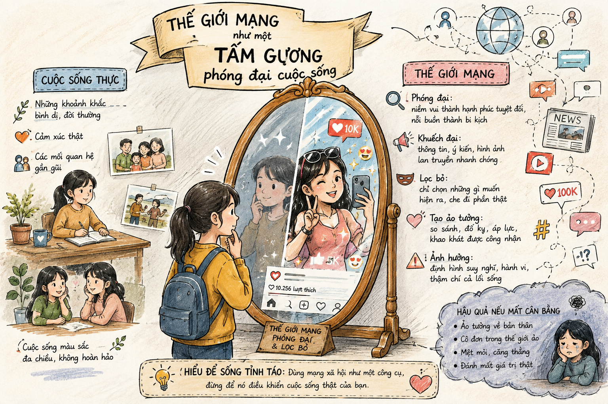

"Mỗi ngày lướt mạng ta có thể nhận ra muôn mặt của cuộc sống, và có khi, bất ngờ nhận ra khả năng 'biến hóa' của chính mình. Làm thế nào để chúng ta giữ vững thái độ chủ động, tỉnh táo đối diện với 'tấm gương phóng đại' mang tên thế giới mạng?"
Tác giả: Nguyễn Thị Hậu (sinh năm 1958), là nhà nghiên cứu khảo cổ học, văn hóa học.
Xuất xứ: Trích từ tác phẩm Thế giới mạng & tôi, NXB Văn học – Công ty cổ phần Sách Thái Hà, Hà Nội, 2014 (tr. 15-18).
Hoàn cảnh sáng tác ghi nhận: Sài Gòn, 5/10/2012.
[ Khung minh họa: h1.png ]
Sự tương tác giữa cá nhân và không gian mạng ảo
Cách nhìn nhận về thế giới mạng thông qua góc nhìn và cảm nhận cá nhân đời thực.
Xác định bản lĩnh, sự tỉnh táo và trách nhiệm của bản thân trước thế giới mạng.
Sức hấp dẫn riêng biệt của nghệ thuật nghị luận dưới hình thức tâm sự, thổ lộ chân thành.
• Sự tự do bộc lộ: Mạng xã hội cho phép con người thể hiện đủ mọi sắc thái tính cách (kiêu ngạo, yếu đuối, hài hước, lãng mạn, độc đoán...). Ở đó, ai cũng có quyền tự do tỏ bày, bộc lộ, bức xúc, tán thưởng, phản đối, tranh luận...
• Cảm xúc hai chiều: Mạng có thể giúp nỗi cô đơn "loãng ra, nhạt đi, nhẹ đi", nhưng cũng chính mạng có lúc lại khiến con người cảm thấy "cô đơn trên mạng" nhiều hơn.
Khái niệm cốt lõi: Quy luật "Ném ra cái gì – Nhận lại cái đó"
Mọi status \( (1) \), comment \( (2) \), note \( (3) \), entry \( (4) \) đều chịu sự va đập của cộng đồng. Sự tương tác tức thời và "không biên giới" có sức quyến rũ mê hoặc ghê gớm nhưng đồng thời là sức mạnh có thể "hủy diệt" một cá nhân trong chốc lát.
| Biểu hiện tích cực / Chuẩn mực | Ranh giới vượt quá (Nguy cơ) |
|---|---|
| Bỗ bã, tếu táo, vui vẻ | Trở nên đanh đá, hỗn hào |
| Nhận xét, khen chê công bằng | Biến thành tâng bốc hoặc mạt sát |
| Quan hệ "ảo" chia sẻ chân thành | Bạn "thật" thành "ảo", chóng tan như mưa bóng mây |

[ Khung minh họa: h2.png ]
Thế giới mạng như một tấm gương phóng đại cuộc sống
Định nghĩa & Luận điểm trọng tâm:
"Thế giới mạng như một tấm gương của cuộc sống, chỉ có điều cần lưu ý, nó là tấm gương phóng đại nhiều lần những tốt đẹp hay xấu xa của mỗi con người, của một xã hội."
➔ Giải pháp của tác giả: Cần giữ sự tỉnh táo để biết nhìn ra chân giá trị của mình và của người khác khi đối diện với tấm gương phóng đại ấy.
Tại sao tác giả lại khẳng định: "Thế giới mạng rất 'tỉnh tướng', không phải cứ đạo mạo lên mặt dạy đời chê bai tất cả thì mạng sẽ vì nể"? Hãy nêu góc nhìn của em.
Sức hấp dẫn riêng của phương thức nghị luận trong văn bản này đến từ đâu?
Các thuật ngữ mạng như status, comment, entry, note xuất hiện mạnh mẽ từ những năm 2008-2012 gắn liền với thời kỳ bùng nổ của Blog Yahoo! 360 và Facebook tại Việt Nam. Tác giả Nguyễn Thị Hậu đã sớm ghi nhận hiện tượng này dưới góc nhìn văn hóa học.
Tự thiết lập "Bộ quy tắc ứng xử mạng cá nhân": kiểm soát cảm xúc trước khi phát ngôn, xác minh thông tin trước khi bình luận, và học cách ngắt kết nối ảo để kết nối đời thực khi cảm thấy cô đơn.
Văn bản nghị luận xã hội dưới dạng tâm sự cần giữ được sự cân bằng: vừa đảm bảo tính logic, chặt chẽ của lý lẽ, vừa phải giữ được hơi thở đời sống và sự tự nhiên trong cảm xúc.
Vượt qua 10 câu hỏi trắc nghiệm để chinh phục đỉnh cao tri thức!
Bài 1 (Phân tích nghệ thuật nghị luận):
Phân tích tác dụng của hình ảnh ẩn dụ "tấm gương phóng đại" được tác giả Nguyễn Thị Hậu sử dụng trong đoạn kết văn bản.
Lời giải:
• Hình ảnh ẩn dụ: "Tấm gương phóng đại" thể hiện bản chất phản chiếu của mạng xã hội.
• Tác dụng: Phản ánh tính chất làm gia tăng, khuếch đại quy mô của mọi cảm xúc và hành vi (cả tốt lẫn xấu). Nhờ đó, người đọc thấy được sự cần thiết phải rèn luyện bản lĩnh "tỉnh táo" để soi rọi lại chính mình thay vì bị cuốn theo những dư luận ảo.
Bài (Viết đoạn văn nghị luận ngắn):
Từ câu nói *"Bạn 'ném' ra cái gì thì thế giới mạng sẽ trả lại bạn cái đó"*, hãy viết 1 đoạn văn (từ 5 - 7 câu) nêu thông điệp ứng xử cho bản thân.
Lời giải gợi ý:
"Câu nói của tác giả đúc kết chính xác quy luật nhân quả trong không gian số. Mọi phát ngôn tiêu cực, cào phím thiếu suy nghĩ sẽ kéo theo sự mạt sát và thù ghét từ cộng đồng. Trái lại, khi lan tỏa sự tử tế, lời khen chân thành và tri thức có giá trị, chúng ta sẽ nhận lại sự kết nối văn minh. Do đó, trước khi nhấn nút 'đăng' hay 'bình luận', tôi luôn tự nhắc mình phải kiểm soát cảm xúc. Văn hóa ứng xử trên mạng là bản chiếu thu nhỏ của nhân cách ngoài đời thực."